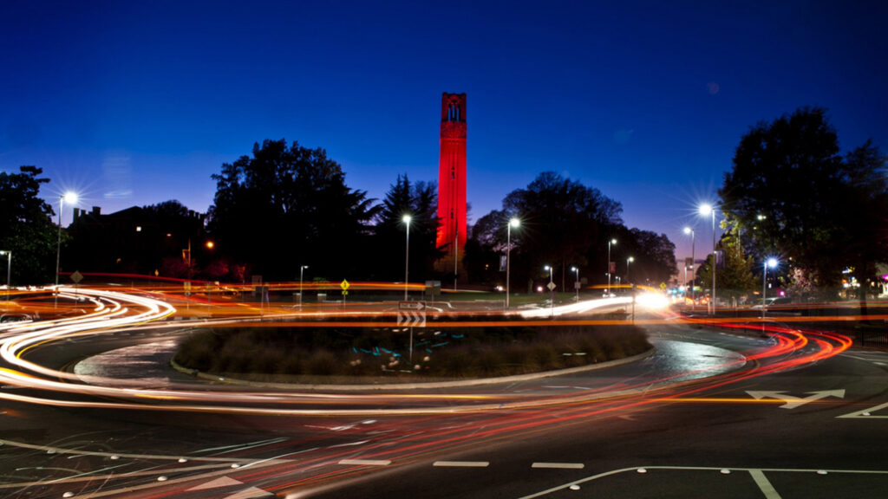
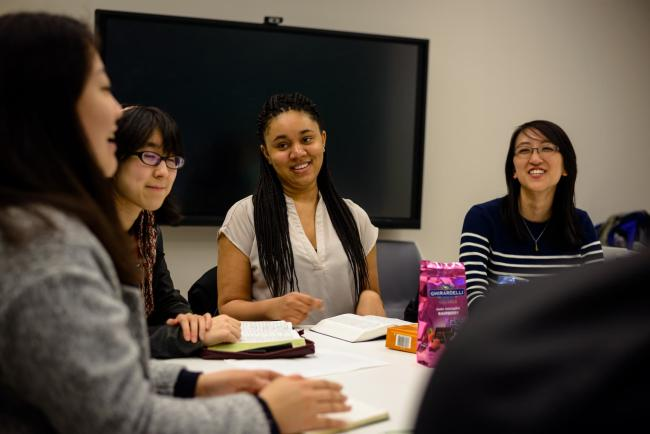

01
A faith that grows.
Explore Scripture and follow Jesus with people who make space for both conviction and curiosity.
ROOTED IN CHRISTGraduate school is a journey.
You don’t have to walk it alone.

OUR CAMPUS. OUR COMMUNITY.We’re IVGrads@NCSU, an InterVarsity graduate fellowship: graduate and professional students seeking Christ in the middle of research, deadlines, and everyday life.
We make room to study Scripture, ask honest questions, and encourage one another. We’re a campus ministry club focused on helping graduate students follow Jesus.
Part of a bigger storyExplore Scripture and follow Jesus with people who make space for both conviction and curiosity.
ROOTED IN CHRISTBring your research, your calling, and your whole self into the conversation about faith and work.
FAITH MEETS SCHOLARSHIPFind friendships beyond your department. Share a meal, take a walk, and make a little room for joy.
BETTER TOGETHER
COME WITH YOUR QUESTIONS.Read a passage together. Talk about what it means for our lives. Pray for one another and our community.
Shared meals, outdoor adventures, and time to simply be together.
Slide 1 of 3: Tuesday fellowship
A thoughtful companion for the questions and transitions of your first year.
Explore the connection between your faith, your work, and the life you’re building.
Encouragement and conversations at the intersection of Christian faith and academic life.
You’re welcome to explore, listen, and ask questions. Our gatherings center on Jesus and the Bible, and you don’t need to have everything figured out to start a conversation.
NC State graduate and professional students from any discipline. If you’re wondering whether it’s a fit, we’d love to hear from you.
We read a Bible passage together, discuss it and its connection to our lives, and finish by praying for each other. We meet on Tuesdays at 7:15 pm. Contact us for the location and any questions before your first visit.
Email ivgradsncsu@gmail.com for this week’s location. If transportation is a concern, let us know and we can talk about options.
IVGrads@NCSU is part of the wider InterVarsity Graduate & Faculty Ministries community, which helps graduate students connect Christian faith, academic life, and vocation. Learn about graduate ministry ↗
New to NC State? New to faith? Just looking for your people?
We’d love to meet you.